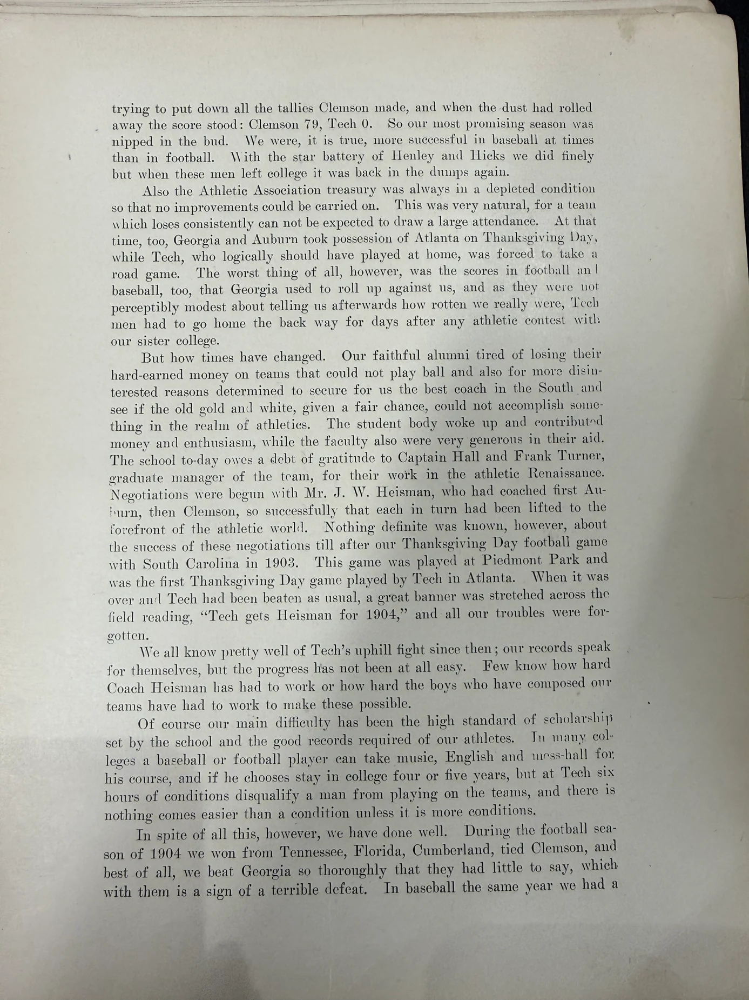
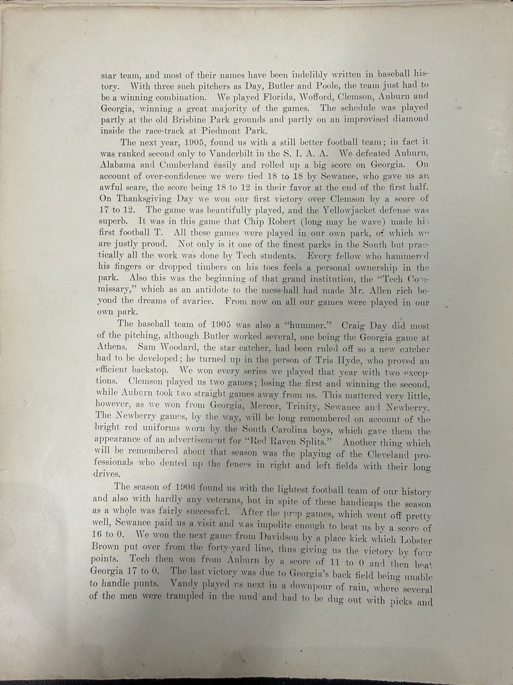
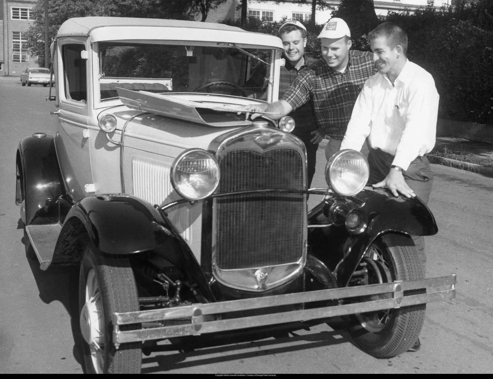
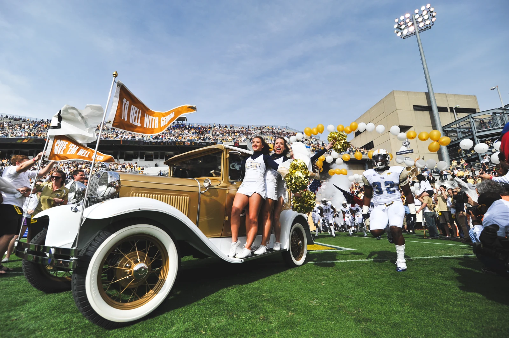
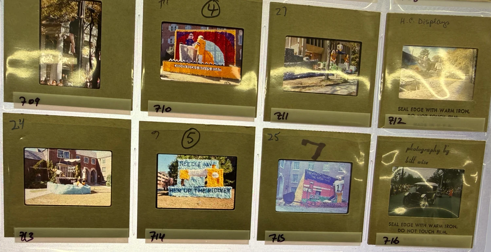
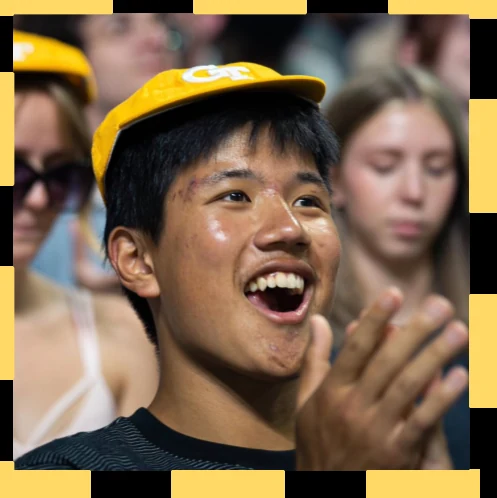
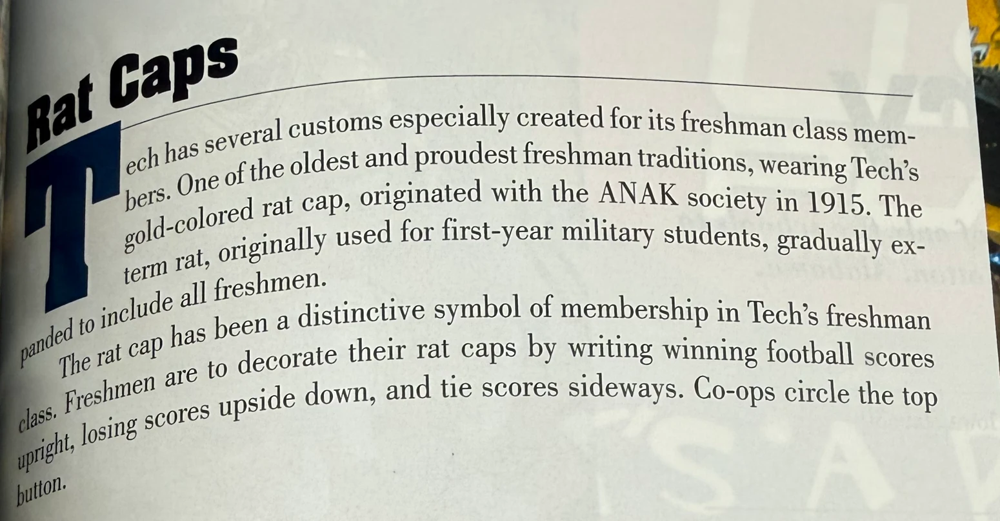

Building the field
Before there was ever a Wreck, students were already helping build the athletic program itself. The 1908 Blue Print yearbook describes a time when the team lost a lot of games and the Athletic Association didn’t have much money. Even so, students contributed money and did a lot of the work on the new athletic park. The yearbook says that doing this work gave them a personal sense of ownership over it.
Read the 1908 yearbook pages




The 1914 Blue Print shows the same thing. Students raised $2,200 for the athletic grounds, the faculty gave another $1,300, and students helped build fences and stands and grade the field. Read the 1914 yearbook.
- Raised by students
- $2,200
- Given by faculty
- $1,300
We saw the same pattern across the traditions we looked at. Students were usually the ones doing the work.
From student cars to the Model A
The phrase “ramblin’ wreck” was used for Tech engineers well before it meant one specific car. Around 1914, Dean Floyd Field’s Ford Model T was a common sight on campus, and by the 1920s and 1930s students were driving their own beat-up cars to games. A 1941 Technique column called “Ramblin’ Wreckonings” describes a vehicle contest with both fraternity and non-fraternity entries. Building a strange car was already a way to show school spirit.
In 1960, Dean Jim Dull saw a gold and white 1930 Ford Model A Sport Coupe and bought it from its owner, Atlanta pilot Ted Johnson. The car led the team onto Grant Field for the first time on September 30, 1961 (Ramblin’ Reck Club and Hobbs). A May 1961 archive photo names three students with the car before that first game. They were Joe McCutchen, Don Gentry, and Dekle Rountree.
The same Model A, two eras
Drag the slider or use the arrow keys to compare the two photographs.



Students keep it on the road
More than 60 years later, the same Model A is still leading the team out. The student-run Ramblin’ Reck Club maintains and drives the car, which moved into a new campus garage in 2023. In 2024, student driver Matthew Kistner broke the mascot’s mileage record by driving it more than 3,000 miles. He also started “Ride Days” so student organizations could sign up for rides (Technique, 2024).
The old car contests are still around in the form of the Homecoming Wreck Parade. In 2024, students and faculty lined up along Fowler Street to watch classic cars, decorated cars, and contraptions students built themselves (Weaver, 2024). See the record for an earlier homecoming display.


In a 2011 study at Old Dominion University, Warner and colleagues found that 63.6% of regular attendees were involved in campus organizations, compared with 39.4% of students who didn’t attend. We think the Wreck is an example of what participation looks like. A student club keeps fixing it, driving it, and sharing it with everyone else.
What our sources don’t show
For a long time, freshmen had to wear RAT caps and write the season’s scores on them. Wins went upright, losses upside down, and ties sideways. Freshmen who didn’t follow the rules could be punished, and the rules eventually ended because of hazing concerns (Georgia Tech, “Rat Caps”). The game program we found talks about the cap as a fun tradition and leaves out the students who didn’t have a choice. The archives may have more about their experiences.
How to read a RAT cap
Flip the cap to see how freshmen wrote the season’s scores.



